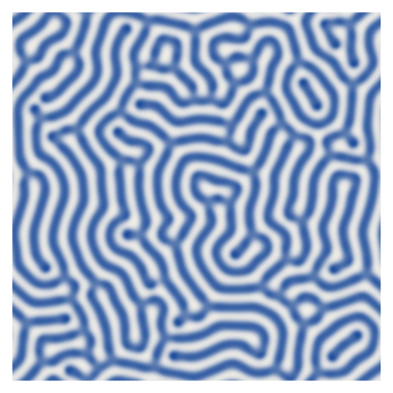
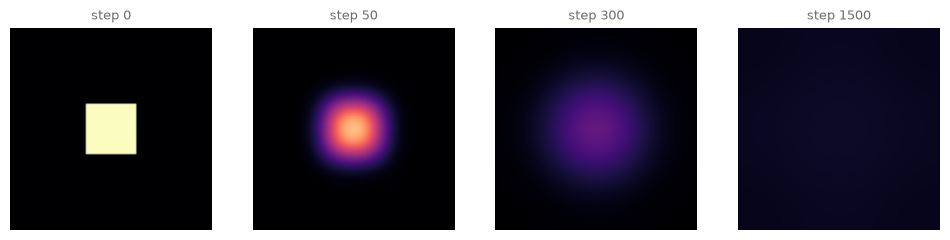
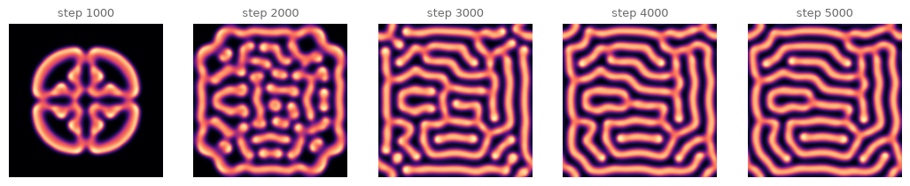
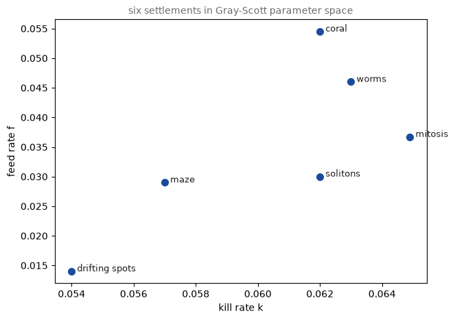
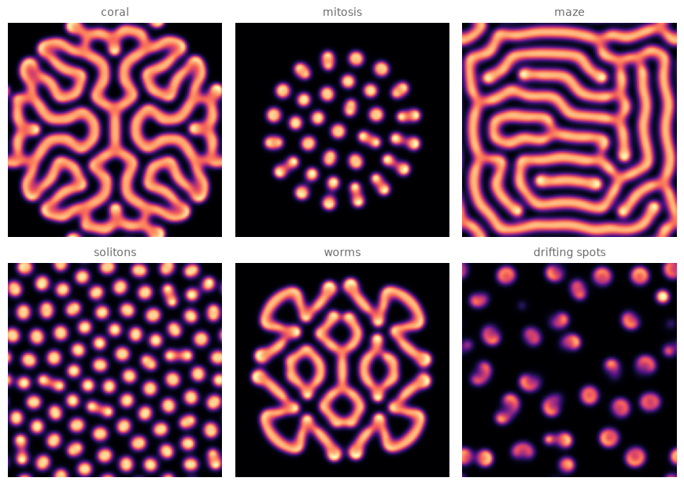
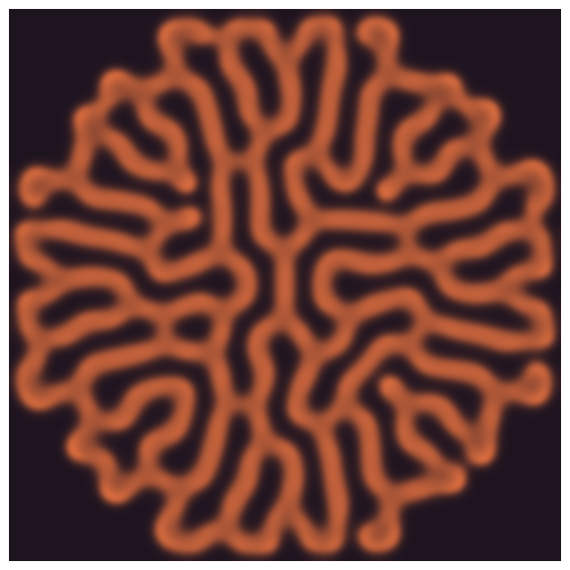
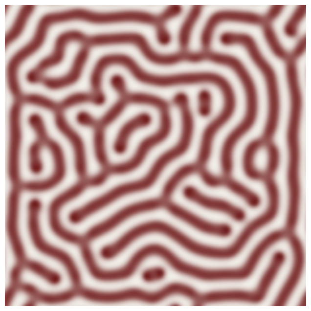
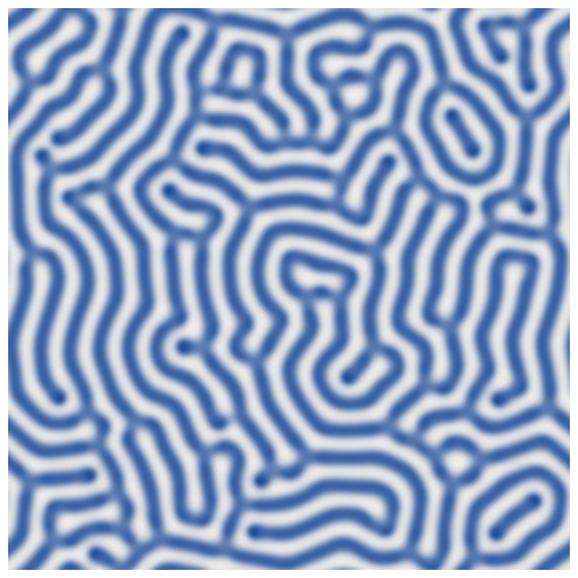

14. Reaction-Diffusion: Turing Patterns#
In 1952 Alan Turing proposed that two chemicals, doing nothing but reacting and spreading, could paint the leopard. Today we simulate his idea in numpy, grow spots, stripes, corals and labyrinths from a single seed, and ask what it means for ornament that nature turns out to compute its patterns.
Today’s destination#
A labyrinth grown, not drawn: the Gray-Scott reaction-diffusion system in its maze regime, run from one square seed until walls fill the canvas. No line in this image was placed by anyone; the chemistry negotiated every turn. By the end of today you can grow six different pattern species from the same five lines of update code.
# display this chapter's showpiece (generated by the last cell of this notebook)
import os
import matplotlib.pyplot as plt
import matplotlib.image as mpimg
showpiece_path = "../assets/outputs/ch14_showpiece.png"
if os.path.exists(showpiece_path):
image = mpimg.imread(showpiece_path)
plt.figure(figsize=(10, 7))
plt.imshow(image)
plt.axis("off")
plt.show()
else:
print("Not generated yet -- run the whole notebook once and come back.")

Context: the mathematician and the leopard#
Alan Turing published “The Chemical Basis of Morphogenesis” in 1952 (Turing 1952), two years before his death, and it reads like nothing else he wrote: a founder of computer science proposing, with full differential-equation seriousness, an explanation for the patterns on animals. His idea needs only two interacting substances he called morphogens: one that activates pattern locally, one that inhibits it over a longer range, both diffusing through tissue. Uniform gray, Turing showed, can be unstable: the slightest unevenness gets amplified into regular spots or stripes whose spacing is set by the chemistry, not by any blueprint. The paper was decades ahead of its evidence; experimental support arrived slowly, from the stripes of the angelfish Pomacanthus (Kondo and Asai 1995) to the ridged pattern of the mouse palate (Economou et al. 2012), and pattern-formation theory is now a standard part of developmental biology. The science writer Philip Ball’s trilogy Nature’s Patterns (2009) is the grand tour of this world, and its recurring hero is Turing.
We simulate the Gray-Scott model, a two-chemical reactor system from the 1980s (Gray and Scott 1984) whose computational behavior John Pearson surveyed in a famous 1993 Science paper (Pearson 1993): sweeping just two dials, a feed rate \(f\) and a kill rate \(k\), he mapped out a dozen regimes of spots, stripes, waves and chaos. (Pearson labeled them with Greek letters; the nicknames we use, coral, mitosis, worms, come from the online communities that adopted the model, starting with Robert Munafo’s Xmorphia catalogue.)
Why does this belong in an art history course? Because ornament has always shadowed nature’s patterns, and reaction-diffusion sharpens an old question. William Morris drew Willow Bough (1887) from willows he could see (Victoria and Albert Museum, collection entry); Hermann Obrist’s whiplash embroidery (c. 1895) abstracted plant energy into Jugendstil’s signature curve (Münchner Stadtmuseum, collection entry); and Owen Jones, back in chapter 3, had already insisted that good ornament follows nature’s principles rather than copying her surfaces (Jones 1856). Turing hands us the sharpest version of that program: not imitating nature’s forms, and not even her principles of arrangement, but running her process. When today’s showpiece looks like coral, no one imitated coral; pattern and reef share an algorithm. Whether that makes the result more natural or less, more designed or less, is a genuinely open question, and it is yours to argue about in the gallery.
Diffusion is local averaging#
Two ingredients build the whole simulation, and the first is diffusion (Diffusion): stuff spreads. On a pixel grid, spreading means every cell drifts toward the average of its neighborhood, and the operator that measures “how far below my neighbors’ average am I” is the discrete Laplacian, a 3x3 convolution kernel:
The weights sum to zero: a flat region gets zero change, a lonely peak gets pulled down, a hole gets filled. This is chapter 13’s convolve doing all the work again, as promised. Watch pure diffusion erase a square:
# diffusion alone: a square spot melting under the Laplacian
import numpy as np
import matplotlib.pyplot as plt
from scipy.ndimage import convolve
LAPLACIAN = np.array([[0.05, 0.2, 0.05],
[0.2, -1.0, 0.2],
[0.05, 0.2, 0.05]])
spot = np.zeros((80, 80))
spot[30:50, 30:50] = 1.0
fig, axes = plt.subplots(1, 4, figsize=(12, 3.2))
snapshots = [0, 50, 300, 1500]
u = spot.copy()
for step in range(snapshots[-1] + 1):
if step in snapshots:
ax = axes[snapshots.index(step)]
ax.imshow(u, cmap="magma", vmin=0, vmax=1)
ax.set_title(f"step {step}", fontsize=9, color="#6B6B6B")
ax.axis("off")
u += convolve(u, LAPLACIAN, mode="wrap")
plt.show()

Left alone, diffusion ends in uniform gray soup: pure entropy, no pattern.
Try it. Reshape the spot in the cell above (spot[30:50, 30:50]): a thin bar, two separate squares, your initial. Diffusion has no opinion about shape; everything melts, only faster or slower.
The second ingredient fights back.
Reaction joins diffusion#
The Gray-Scott system tracks two chemicals on the same grid: \(u\) (the feedstock, everywhere initially) and \(v\) (the pattern-maker, seeded in one patch). Three things happen at once: the reaction \(u + 2v \to 3v\), in which \(v\) eats \(u\) to make more \(v\); a feed that tops \(u\) back up toward 1 at rate \(f\); and a kill that drains \(v\) away at rate \(k\). With diffusion added (and \(u\) spreading twice as fast as \(v\)), the update equations are:
The left-hand sides just say “how this chemical changes per tick” (\(\partial u/\partial t\) is calculus shorthand for exactly that), and \(\nabla^2\), spoken “the Laplacian”, is the neighbor-comparing kernel we just built. Term by term, in words: spread, get eaten, get refilled for \(u\); spread, grow by eating, die off for \(v\). (Look closely: \(v\)’s die-off runs at \(f + k\), not \(k\) alone, because the same inflow that feeds \(u\) also flushes \(v\) out of the reactor.) That is the entire model. The activator-inhibitor tension Turing asked for hides in the rates: \(v\) promotes itself (autocatalysis) but its food diffuses in faster than it does, so growth saturates and spaces itself out. Patterns are the negotiation.
# one Gray-Scott step, and a seeded starting state
def gray_scott_step(u, v, f, k, du=1.0, dv=0.5):
lap_u = convolve(u, LAPLACIAN, mode="wrap")
lap_v = convolve(v, LAPLACIAN, mode="wrap")
reaction = u * v * v # the u + 2v -> 3v encounter rate
u_next = u + du * lap_u - reaction + f * (1 - u)
v_next = v + dv * lap_v + reaction - (f + k) * v
return u_next, v_next
def seeded_state(size, seed, patch=None):
rng = np.random.default_rng(seed)
u = np.ones((size, size))
v = np.zeros((size, size))
half = size // 10 if patch is None else patch
center = size // 2
u[center - half:center + half, center - half:center + half] = 0.5
v[center - half:center + half, center - half:center + half] = 0.25
u += rng.uniform(-0.02, 0.02, u.shape) # a whisper of unevenness
v += rng.uniform(-0.02, 0.02, v.shape) # (Turing's instability needs it)
return u, v
# run the maze regime from the center seed; snapshot every thousand steps
u, v = seeded_state(size=160, seed=1)
snapshots = [1000, 2000, 3000, 4000, 5000]
fig, axes = plt.subplots(1, 5, figsize=(13, 2.9))
for step in range(1, snapshots[-1] + 1):
u, v = gray_scott_step(u, v, f=0.029, k=0.057)
if step in snapshots:
ax = axes[snapshots.index(step)]
ax.imshow(v, cmap="magma")
ax.set_title(f"step {step}", fontsize=9, color="#6B6B6B")
ax.axis("off")
plt.show()

The seed erupts, fingers reach out, fingers negotiate spacing, and a labyrinth crystallizes outward with a preferred wall thickness that no parameter states directly; it emerges from the race between feeding and killing (chapter 13’s word, now in continuous form). Five thousand steps of pure local arithmetic; nothing in the code knows what a maze is.
Try it. In the running cell, nudge k to 0.061 and rerun: same seed, entirely different species. Millimeters matter in the \((f, k)\) plane, which is exactly why Pearson drew a map of it.
The map of species#
Our six chosen settlements on Pearson’s map, each named for what you will see. The diagram (axes on: this is a map, not an artwork) shows where they sit; the gallery below actually grows each one. All six run the identical gray_scott_step; only \((f, k)\) changes.
# six (f, k) presets, located on the feed-kill plane
PRESETS = {
"coral": (0.0545, 0.062),
"mitosis": (0.0367, 0.0649),
"maze": (0.029, 0.057),
"solitons": (0.03, 0.062),
"worms": (0.046, 0.063),
"drifting spots": (0.014, 0.054),
}
plt.figure(figsize=(7, 5))
for name, (f, k) in PRESETS.items():
plt.plot(k, f, "o", color="#1B4B9B", markersize=7)
plt.annotate(f" {name}", (k, f), fontsize=9, color="#1A1A1A")
plt.xlabel("kill rate k")
plt.ylabel("feed rate f")
plt.title("six settlements in Gray-Scott parameter space", fontsize=10,
color="#6B6B6B")
plt.show()

# grow all six: same code, same seed shape, six species (about half a minute)
def grow(preset, size=160, steps=5000, seed=1):
f, k = PRESETS[preset]
u, v = seeded_state(size, seed)
for step in range(steps):
u, v = gray_scott_step(u, v, f, k)
return v
fig, axes = plt.subplots(2, 3, figsize=(11, 7.5))
for ax, name in zip(axes.flat, PRESETS):
ax.imshow(grow(name), cmap="magma")
ax.set_title(name, fontsize=10, color="#6B6B6B")
ax.axis("off")
fig.subplots_adjust(wspace=0.05, hspace=0.12)
plt.show()

Six patterns, one law. Mitosis earns its name in motion: its dots grow, pinch, and divide like cells (rerun with steps=2000 to catch them mid-split). Drifting spots never settles at all; what you see is one frame of a perpetual migration. And coral at this point is still growing; give it 10000 steps and it fills the frame. The deep lesson sits in the pairing of maze and solitons: their parameters differ by a few thousandths, their outputs belong to different worlds. Developmental biologists suspect exactly such knife-edges separate the leopard from the cheetah (Murray 1988).
Try it. Found a settlement of your own: add an entry to PRESETS with an \((f, k)\) picked between two of ours, then grow it alone with plt.imshow(grow("your name"), cmap="magma") (about fifteen seconds). Which species claims your coordinates?
Style pass: chemistry in course colors#
Grayscale-plus-colormap is the diagnostic view. For artwork we map the \(v\) concentration onto a two-color gradient of our own, chapter 6’s lesson that the palette is the picture. LinearSegmentedColormap.from_list builds a colormap from any two hex colors, and suddenly the same chemistry prints as indigo porcelain, riso poster, or moss on limestone.
# the finished generator: a preset, two colors, print-ready chemistry
import sys
sys.path.append("..")
from matplotlib.colors import LinearSegmentedColormap
from agap.helpers import save_artwork
def turing_art(preset, low="#F2EFE9", high="#1B4B9B", size=220, steps=6000,
seed=1, figsize=8):
field = grow(preset, size, steps, seed)
colormap = LinearSegmentedColormap.from_list("duo", [low, high])
fig = plt.figure(figsize=(figsize, figsize))
plt.imshow(field, cmap=colormap, interpolation="bilinear")
plt.axis("off")
plt.show()
return fig
art_1 = turing_art("coral", low="#1E1420", high="#D96C3F")

# temperament 2 and 3: dividing cells in Bauhaus red, worms in deep moss
art_2 = turing_art("mitosis", low="#F2EFE9", high="#D02433", steps=3500)
art_3 = turing_art("worms", low="#0E1A12", high="#8FBC6D")
Look and compare. The coral in ember orange reads as organic, almost wet; the same coral in gray reads as an X-ray. Which two-color pairing makes the mitosis dots most unsettling, and is the discomfort in the pattern or in the palette? William Morris insisted a wallpaper needed “order” behind its nature (Morris 1881); rank the three panels by how wallpaper-able they are, and try to name the property that disqualifies the losers.
Export your artwork#
Choose a species, choose two colors, grow yours. Replace yourname and run; the print-quality PNG lands in assets/outputs/. (Patience beats resolution: doubling size quadruples the work and the pattern needs proportionally more steps to fill the frame.)
# save YOUR artwork: adjust preset, colors, steps, replace 'yourname', run
my_artwork = turing_art("maze", low="#F2EFE9", high="#701C1C", seed=2026)
saved_path = save_artwork(my_artwork, "yourname", chapter=14)

saved: assets/outputs/ch14_yourname.png
Exercises#
(a) Parameter exploration: rain instead of one seed. Replace the center-patch seeding in seeded_state with several small patches at random positions (a loop over rng.integers corner coordinates works). Grow the maze preset from 1, 5, and 20 seeds. Where colonies meet, sutures form: compare the texture of a one-seed maze with a twenty-seed one. Which reads more like coral reef, and which like brain?
(b) Code modification: a climate gradient. Because our update is elementwise, \(f\) need not be one number: hand it a whole array and every column can live under a different feed rate. Build an \(f\) that ramps linearly from 0.014 on the left edge to 0.062 on the right (at fixed \(k = 0.058\)), run 8000 steps on a wide grid, and watch the pattern species morph across one image, drifting spots on one coast, solid ground on the other. One line changes; broadcasting does the rest.
Solution
size = 200
f_ramp = np.linspace(0.014, 0.062, 2 * size) # one f per column
f_field = np.tile(f_ramp, (size, 1)) # same ramp in every row
rng = np.random.default_rng(3)
u = np.ones((size, 2 * size))
v = np.zeros((size, 2 * size))
for patch in range(8): # a few seeds along the strip
row = rng.integers(20, size - 20)
column = rng.integers(20, 2 * size - 20)
u[row - 6:row + 6, column - 6:column + 6] = 0.5
v[row - 6:row + 6, column - 6:column + 6] = 0.25
u += rng.uniform(-0.02, 0.02, u.shape)
v += rng.uniform(-0.02, 0.02, v.shape)
for step in range(8000):
u, v = gray_scott_step(u, v, f=f_field, k=0.058)
plt.figure(figsize=(12, 6))
plt.imshow(v, cmap="magma", interpolation="bilinear")
plt.axis("off")
plt.title("feed rate rising left to right; k fixed", fontsize=9,
color="#6B6B6B")
plt.show()
gray_scott_step never asked whether f was a scalar; f * (1 - u) broadcasts either way. That free generality of array code is worth savoring, and the resulting image, one continuous chemistry crossing several pattern species, has no hand-drawn equivalent.
(c) Creative challenge: pattern wearing a painting. Seed the system not with a square but with an artwork’s silhouette: load an image (chapter 6 shows how), threshold its dark regions, and set the \(v\) patch there. Run a preset that will not fully erase the seed (short maze runs work; so does coral). The result hovers between the original image and pure chemistry; stop the simulation at the step where that tension is best, and defend your stopping point in one gallery sentence. Turner meets Turing.
Further reading#
Alan Turing, “The Chemical Basis of Morphogenesis”, Philosophical Transactions of the Royal Society B 237 (1952): the historic original; skim the prose sections, which are unexpectedly gentle.
Philip Ball, Nature’s Patterns: A Tapestry in Three Parts (2009), especially the volume Shapes: the best guided tour of pattern formation for non-specialists.
John E. Pearson, “Complex Patterns in a Simple System”, Science 261 (1993): one page of equations, one page of pictures, and the map our presets came from.
Karl Sims, Reaction-Diffusion Tutorial: an interactive Gray-Scott explorer by a pioneer of artificial-life art; sweep \((f, k)\) live and find species we did not name.
References#
Ball, P. (2009). Nature’s Patterns: A Tapestry in Three Parts. Oxford University Press. Three volumes (Shapes, Flow, Branches); the guided tour of pattern formation recommended above.
Economou, A. D., Ohazama, A., Porntaveetus, T., Sharpe, P. T., Kondo, S., Basson, M. A., Gritli-Linde, A., Cobourne, M. T., and Green, J. B. A. (2012). Periodic stripe formation by a Turing mechanism operating at growth zones in the mammalian palate. Nature Genetics, 44(3), 348–351. doi:10.1038/ng.1090. The mouse-palate evidence: an identified activator-inhibitor pair patterning the ridges of the palate.
Gray, P., and Scott, S. K. (1984). Autocatalytic reactions in the isothermal, continuous stirred tank reactor: oscillations and instabilities in the system A + 2B → 3B; B → C. Chemical Engineering Science, 39(6), 1087–1097. doi:10.1016/0009-2509(84)87017-7. The reactor study the Gray-Scott model and its name come from.
Jones, O. (1856). The Grammar of Ornament. Day and Son. Proposition 13 demands conventional representations founded on natural objects rather than imitations of them.
Kondo, S., and Asai, R. (1995). A reaction–diffusion wave on the skin of the marine angelfish Pomacanthus. Nature, 376, 765–768. doi:10.1038/376765a0. The angelfish stripes: the first strong evidence that Turing dynamics run on a living animal.
Morris, W. (1881). Some Hints on Pattern-Designing. Lecture at the Working Men’s College, London, 10 December 1881; published as a pamphlet by Longmans and Co., 1899. Text at the Marxists Internet Archive. Source of the demand quoted above: pattern-work “must possess three qualities: beauty, imagination, and order”.
Munafo, R. Reaction-Diffusion by the Gray-Scott Model: Pearson’s Parametrization (Xmorphia). mrob.com/pub/comp/xmorphia. The community catalogue that named the pattern species.
Münchner Stadtmuseum. Großer Wandbehang mit Seidenstickerei (“Peitschenhieb”), c. 1895. Collection entry. Obrist’s whiplash embroidery, in the museum that holds it.
Murray, J. D. (1988). How the leopard gets its spots. Scientific American, 258(3), 80–87. doi:10.1038/scientificamerican0388-80. One reaction-diffusion mechanism, varied parameters, the whole zoo of mammalian coats.
Pearson, J. E. (1993). Complex patterns in a simple system. Science, 261(5118), 189–192. doi:10.1126/science.261.5118.189. The numerical survey whose \((f, k)\) map our presets settle on.
Turing, A. M. (1952). The chemical basis of morphogenesis. Philosophical Transactions of the Royal Society of London. Series B, 237(641), 37–72. doi:10.1098/rstb.1952.0012. The founding paper, morphogens and all.
Victoria and Albert Museum. Willow Bough, wallpaper designed by William Morris, 1887. Collection entry. Confirms the design and its date.
Appendix: regenerate the showpiece#
This last cell (re)creates the image shown at the top of the notebook: the maze regime grown large. It takes about half a minute; raise size (and steps with it) at home for a poster-sized labyrinth. It runs automatically with Restart & Run All.
# regenerate this chapter's showpiece: the grown labyrinth, indigo on paper
showpiece = turing_art("maze", low="#F2EFE9", high="#1B4B9B",
size=320, steps=11000, seed=10, figsize=9)
saved_path = save_artwork(showpiece, "showpiece", chapter=14)

saved: assets/outputs/ch14_showpiece.png